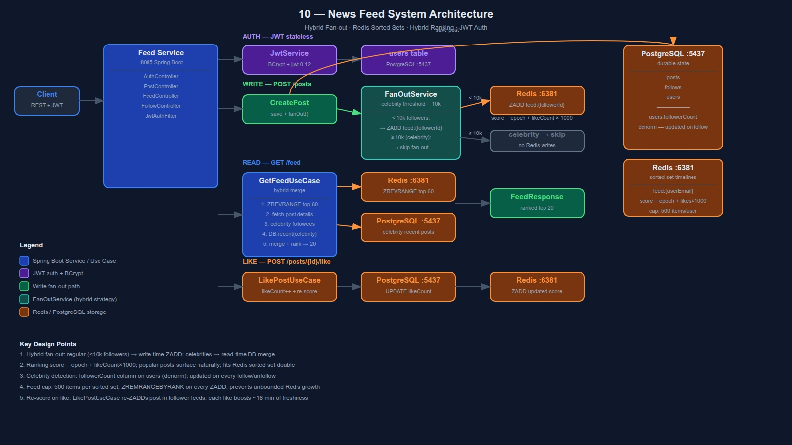

Fan-out on Write · Fan-out on Read · Hybrid · Redis Sorted Sets · Hybrid Ranking
A news feed that delivers a ranked timeline of posts from followed users. Celebrities (≥10k followers) skip fan-out at write time — their posts are merged at read time. Regular users get instant write-time fan-out.
Core challenge: serve a ranked feed in <100ms while handling both celebrity (high-follower) and regular (low-follower) authors efficiently.

On post create, push to every follower's Redis sorted set immediately.
✓ Read is O(1) — just ZREVRANGE
✗ Expensive for celebrities — 500k Redis writes
Used for: regular users < 10k followers
On feed request, pull recent posts from all followed users and merge.
✓ Write is cheap — just save post
✗ Slow read — N DB queries per celebrity followed
Used for: celebrities ≥ 10k followers
Regular users → fan-out on write.
Celebrities → fan-out on read.
GET /feed:
Redis.ZREVRANGE(feed:{uid}) ← regular
+ DB.recent(celebrity_1) ← on read
+ DB.recent(celebrity_2)
→ merge + rank → top 20
Each user has a sorted set feed:{userEmail}. Score encodes rank. Read = ZREVRANGE.
Key: feed:{userEmail}
Score: hybrid_score (double — fits Redis sorted set)
Member: postId (UUID string)
Fan-out write (regular user posts):
for each follower:
ZADD feed:{followerId} O(log N)
ZREMRANGEBYRANK feed:{followerId} 0 -501 trim to 500 max
Feed read:
ZREVRANGE feed:{userId} 0 59 top 60 candidates
load posts from DB by IDs
merge celebrity posts (pulled from DB)
re-rank → paginate → return 20
Why sorted set?
O(log N) insert, O(log N + M) range read (M = returned elements)
Score naturally orders by rank — no sort step needed
Supports ZREMRANGEBYRANK for capped inbox model
Score = recency + engagement. Stored as Redis sorted set score. No separate scoring pass.
score = createdAt.epochSeconds + (likeCount × LIKE_BOOST_SECONDS)
LIKE_BOOST_SECONDS = 1000 (~16 minutes per like)
Examples (2025-06-01 12:00:00 = epoch 1748779200):
Post A: 0 likes → score = 1748779200 + 0 = 1748779200
Post B: 5 likes → score = 1748779200 + 5000 = 1748784200 (+83 min above A)
Post C: 100 likes→ score = 1748779200 + 100000 = 1748879200 (+27h above A)
Older post with 50 likes published 1h ago:
epoch = 1748779200 - 3600 = 1748775600
score = 1748775600 + 50000 = 1748825600
→ ranks above fresh post A but below post B (5 likes)
On like: update post DB + re-insert in each follower feed with new score
(only for regular users — celebrity feeds rebuilt on read anyway)
Fits in a single Redis sorted set double score. No separate scoring index or secondary sort needed. Simple to reason about and tune.
Multiplicative decay: score = likes / (age_hours + 2)^1.5 (Hacker News formula). More sophisticated but requires re-scoring job as posts age.
| Decision | Choice | Why |
|---|---|---|
| Fan-out strategy | Hybrid (write <10k, read ≥10k) | Write-only: celebrities clog fan-out. Read-only: wasteful for regular users |
| Celebrity threshold | 10k followers | Common baseline; configurable constant in FanOutService |
| Timeline storage | Redis sorted set per user | O(log N) insert + range read; score encodes rank directly |
| Ranking | epoch + like×1000 (additive) | Fits Redis double; no separate scoring pass; easy to tune |
| Feed cap | 500 items per user | Prevents unbounded Redis growth; inbox not archive |
| Celebrity detection | followerCount on User (denormalized) | Avoids N queries per feed read; updated on follow/unfollow |
| Kafka | Not used | Fan-out synchronous; feed items are eventually consistent anyway |
What we build ourselves — to understand what managed services abstract away.
| What we build | AWS equivalent |
|---|---|
| Redis sorted set (feed) | ElastiCache (Redis) — same API |
| Fan-out on Write (synchronous) | Kinesis → Lambda → ElastiCache fan-out |
| Celebrity fan-out on Read | DynamoDB query at read time + Lambda aggregator |
| PostgreSQL (posts, follows) | DynamoDB with GSI on authorId + followerId |
| Hybrid ranking score | ElastiCache ZADD + DynamoDB ranking attribute |